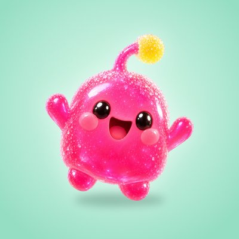

Fanout
Give a big question to a team of little helpers.
First job free
- Up to 247 agents per job
- See your quote before paid work
- Checked, source-linked results

JellySwarmDashboard →Give the swarm a big job. Watch the little agents split it up, check their work and bring it all together.
Meet your swarm → SCOUT
SCOUT PLANNER
PLANNER CHECKER
CHECKER MERGER
MERGER RECEIPTS
RECEIPTS WATCHER
WATCHERMany little helpers. One clear result.
Choose a stage to see how a big request becomes a checked result.
The planner reads your request, organizes the work, and prepares a quote before anything runs.
Little helpers for your next big idea.
Your first small job is free. Pick the kind of help that fits your question.
Give a big question to a team of little helpers.
Turn a list into a clear, cited table.
Keep a little watch on the things that matter.
The first small job is free. Later jobs may have a charge; you’ll see a fixed quote before they run. Picket’s free beta and paid plans are planned.
Little promises at the heart of JellySwarm.
Fixed quote · escrow
Checked work · row refunds
Signed receipts · source links
Your first small job is planned to be free, with no wallet or card required. Later jobs may be paid, and you’ll see a quote before work begins.
No. That is the maximum. The quote shows how many agents the job will use.
A failed row gets one retry. If it fails again, its share is refunded at settlement. If nothing passes, the entire price is refunded.
No. Jobs are intended to be priced in USDC or USDG. Product tokens are described separately in the overview.
No. JellySwarm is designed for research and monitoring; it does not place trades or hold your keys.
At launch, the checker is a separate process, key and model family, but JellySwarm runs both workers and checkers until outside checkers join.
Big questions are easier with a team.